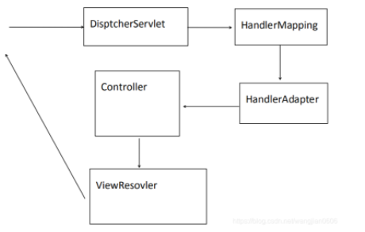

SpringMVC
一.SpringMVC 简介
1.SpringMVC 中重要组件
- DispatcherServlet : 前端控制器,接收所有请求(如果配置/不包 含 jsp)
- HandlerMapping: 解析请求格式的.判断希望要执行哪个具体 的方法.
- HandlerAdapter: 负责调用具体的方法.
- ViewResovler:视图解析器.解析结果,准备跳转到具体的物理视图
2.SpringMVC 运行原理图

SpringMVC 容器中能够调用 Spring 容器的所有内容
二.SpringMVC 环境搭建
1.在 web.xml 中配置前端控制器 DispatcherServlet
1 | <servlet> |
2.在 src 下新建 springmvc.xml
1 |
|
3.编写控制器类
1 | package com.wj.controller; |
三 . 字符编码过滤器
1.在 web.xml 中配置 Filter
1 | <!-- 字符编码过滤器 --> |
四.传参
把内容写到方法 (HandlerMethod) 参数中 ,SpringMVC 只要有这个内 容 , 注入内容 .
基本数据类型参数
2.1 默认保证参数名称和请求中传递的参数名相同
2.2 如果请求参数名和方法参数名不对应使用@RequestParam()赋值
2.3 如果方法参数是基本数据类型(不是封装类)可以通过@RequestParam 设置默认值
2.4 如果强制要求必须有某个参数 @RequestParam(required=true)
HandlerMethod 中参数是对象类型
3.1 请求参数名和对象中属性名对应 (get/set 方法 )
1
2
3
4
public String demo4(People peo){
return "main.jsp";
}请求参数中包含多个同名参数的获取方式
4.1 复选框传递的参数就是多个同名参数
1
2
3
4
5
public String demo5(String name,int age,List<String> abc){
System.out.println(name+" "+age+" "+abc);
return "main.jsp";
}请求参数中对象 . 属性格式
在请求参数中传递集合对象类型参数
restful 传值方式 .
7.1 简化 jsp 中参数编写格式
7.2 在 jsp 中设定特定的格式
1
<a href="demo8/123/abc">跳转</a>
7.3 在控制器中
7.3.1 在 @RequestMapping 中一定要和请求格式对应
7.3.2 { 名称 } 中名称自定义名称
7.3.3 @PathVariable 获取 @RequestMapping 中内容 ,默认按照 方法参数名称去寻找 .
1
2
3
4
5
public String demo8( int id, String name) {
System.out.println("执行demo8" + name + " " + id);
return "/main.jsp";
}
四 . 跳转方式
默认跳转方式请求转发 .
设置返回值字符串内容
2.1 添加 redirect:资源路径 重定向
2.2 添加 forward: 资源路径 或省略 forward: 转发
五 . 视图解析器
SpringMVC 会提供默认视图解析器 .
程序员自定义视图解析器
1
2
3
4
5<!-- 视图解析器 -->
<bean id="viewResolver" class="org.springframework.web.servlet.view.InternalResourceViewResolver">
<property name="prefix" value="/"></property>
<property name="suffix" value=""></property>
</bean>
六 .@ResponseBody
在方法上只有 @RequestMapping 时 ,无论方法返回值是什么认为需 要跳转
在方法上添加 @ResponseBody( 恒不跳转 )
2.1 如果返回值满足 key-value 形式(对象或 map)
2.1.1 把响应头设置为 application/json;charset=utf-8
2.1.2 把转换后的内容输出流的形式响应给客户端.
2.2 如果返回值不满足 key-value,例如返回值为 String
2.2.1 把相应头设置为 text/html
2.2.2 把方法返回值以流的形式直接输出.
2.2.3 如果返回值包含中文,出现中文乱码
2.2.3.1 produces 表示响应头中 Content-Type 取值.
1
@RequestMapping(value="demo12",produces="text/html; charset=utf-8")
底层使用 Jackson 进行 json 转换 , 在项目中一定要导入 jackson 的 jar
3.1 spring4.1.6 对 jackson 不支持较高版本,jackson 2.7 无效.
七.文件上传
1 | <!-- 文件上传相关依赖 --> |
一. 文件下载
访问资源时相应头如果没有设置 Content-Disposition,浏览器默认按 照 inline 值进行处理
1.1 inline 能显示就显示 , 不能显示就下载 .
只需要修改相应头中 Context-Disposition=”attachment;filename=文 件名 ”
2.1 attachment 下载 , 以附件形式下载 .
2.2 filename= 值就是下载时显示的下载文件名
1
2
3
4
5
6
7
8
9
10
11
12
13
14
public void download(String fileName, HttpServletResponse res, HttpServletRequest req) throws IOException {
// 设置响应流中文件进行下载
res.setHeader("Content-Disposition", "attachment;filename=" + fileName);
// 把二进制流放入到响应体中.
ServletOutputStream os = res.getOutputStream();
String path = req.getServletContext().getRealPath("files");
// System.out.println(path);// 文件的真实路径
File file = new File(path, fileName);
byte[] bytes = FileUtils.readFileToByteArray(file);
os.write(bytes);
os.flush();
os.close();
}
二. 文件上传
基于 apache 的 commons-fileupload.jar 完成文件上传 .
MultipartResovler 作用 :
2.1 把客户端上传的文件流转换成 MutipartFile 封装类.
2.2 通过 MutipartFile 封装类获取到文件流
表单数据类型分类
3.1 在
3.2 默认值 application/x-www-form-urlencoded,普通表单数据.(少 量文字信息)
3.3 text/plain 大文字量时使用的类型.邮件,论文
3.4 multipart/form-data 表单中包含二进制文件内容
1
2
3
4
5
6
7
8
9
10
11
12
13
14
public String upload(MultipartFile file, String name, HttpServletRequest req) throws IOException {
String fileName = file.getOriginalFilename();
String suffix = fileName.substring(fileName.lastIndexOf("."));
// 判断上传文件类型
String uuid = UUID.randomUUID().toString();
String path = req.getServletContext().getRealPath("files");
System.out.println(uuid);
System.out.println(path);
FileUtils.copyInputStreamToFile(file.getInputStream(), new File(path+"/" + uuid + suffix));
return "/index.jsp";
}
八. 自定义拦截器
跟过滤器比较像的技术 .
发送 请求 时被拦截器拦截 , 在控制器的前后添加额外功能 .
2.1 跟 AOP 区分开.AOP 在特定方法前后扩充(对 ServiceImpl)
2.2 拦截器,请求的拦截.针对点是控制器方法.(对 Controller)
SpringMVC 拦截器和 Filter 的区别
3.1 拦截器只能拦截器 Controller
3.2 Filter 可以拦截任何请求
实现自定义拦截器的步骤 :
4.1 新建类实现 HandlerInterceptor
1
2
3
4
5
6
7
8
9
10
11
12
13
14
15
16
17
18
19
20
21
22
23
24
25package com.wj.interceptor;
import javax.servlet.http.HttpServletRequest;
import javax.servlet.http.HttpServletResponse;
import org.springframework.web.servlet.HandlerInterceptor;
import org.springframework.web.servlet.ModelAndView;
public class DemoInterceptor implements HandlerInterceptor {
public boolean preHandle(HttpServletRequest request, HttpServletResponse response, Object handler)
throws Exception {
System.out.println("preHandle");
return true;
}
public void postHandle(HttpServletRequest request, HttpServletResponse response, Object handler,
ModelAndView modelAndView) throws Exception {
System.out.println("postHandle");
}
public void afterCompletion(HttpServletRequest request, HttpServletResponse response, Object handler, Exception ex)
throws Exception {
System.out.println("afterCompletion");
}
}4.2 在 springmvc.xml 配置拦截器需要拦截哪些控制器
1
2
3
4
5
6
7
8
9<!-- 拦截器 -->
<mvc:interceptors>
<mvc:interceptor>
<mvc:mapping path="/demo8" />
<bean class="com.wj.interceptor.DemoInterceptor"></bean>
</mvc:interceptor>
<!-- 拦截所有的url -->
<bean class="com.wj.interceptor.LoginInterceptor"></bean>
</mvc:interceptors>
 微信
微信 支付宝
支付宝